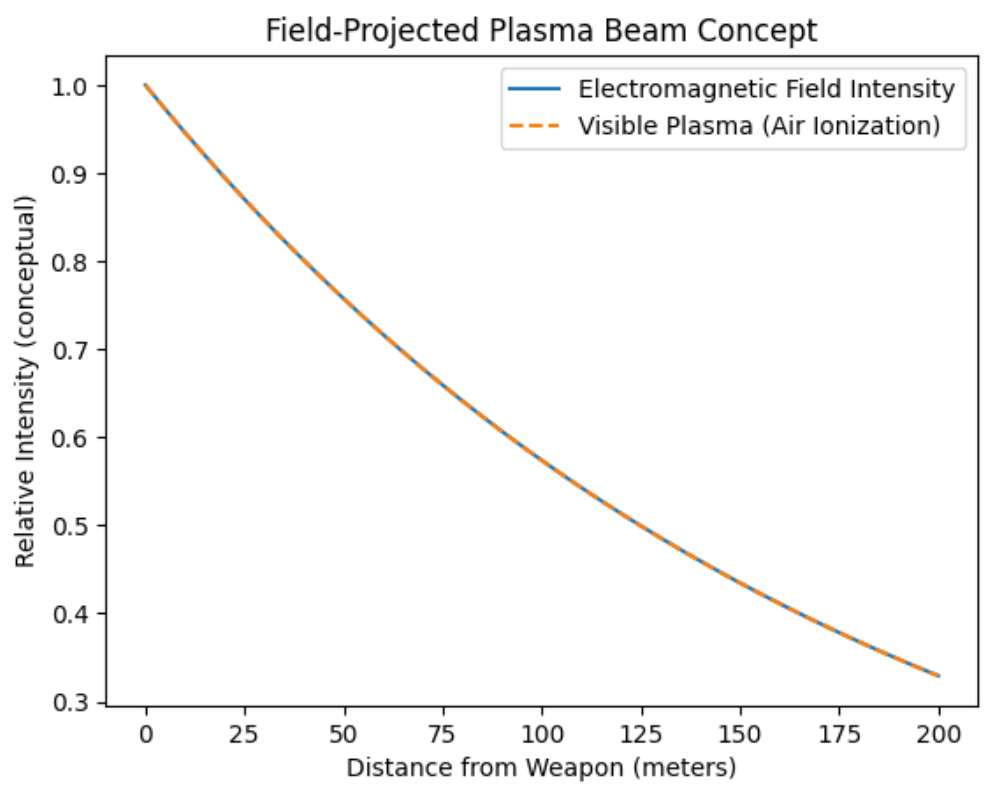

<!DOCTYPE projects>
<projects lang="en">
<head>
    <meta charset="UTF-8">
    <title>MyRobots/projects</title>
    <style>
html, body {
    height: 100%;
    margin:0;
    width: 100%;
}
body {
    display:flex;
    flex-direction:column;
    background-color: black;
    color: white;
    width: 100%;
}
.spacer {
    height: 40px; /* change this for more/less space */
}
.center-gif {
    display: block;
    margin-left: auto;
    margin-right: auto;
    width: 25%;
}
.text-left {
   display: block;
    margin-left: auto;
    margin-right: auto;
    width: 100%;
    text-align: left;
}
.text-center {
    display: block;
     margin-left: 50;
     margin-right: 50;
     width: 100%;
     text-align: center;
}
     .topBar {
       position: fixed;
    top: 0;
    left: 0;
    width: 100%;             /* always full screen */
    display: flex;
    justify-content: center;  /* centers the links inside */
    gap: 30px;
    background-color: #1e293b;
    padding: 15px 0;
    z-index: 100;
    }
    .text-top {
        position:fixed;
        margin-top: 50px;
        top: 10;
        text-align: center;
        display: flex;
            z-index: 100;
    }
    .graph-sb {
        display: block;
        transform: translateX(-5%);
        width:40%;
    }
    </style>
</head>
<body>
    <nav class="topBar">
       <<a href="frontpage.html" style="color: white; margin-right: 15px;">Home</a>
        <a href="projects.html" style="color: white; margin-right: 15px;">Projects</a>
        <a href="jokePage.html" style="color: white; margin-right: 15px;">Jokes</a>
        <a href="qna.html" style="color: white; margin-right: 15px;">QnA</a>
        <a href="contact.html" style="color: white; margin-right: 15px;">Contact</a>
        <a href="logIn.html" style="color: white; margin-right: 15px;">Log In</a>
    </nav>
    <div class="spacer"></div>
        <h1>My Projects</h1>

        <h2>Sentanal beam </h2>
        
        <p>this graph dipicts a em field 'blaster' which emits ultra‑fast EM pulses continuously </p>
        <p> creating a solid beam of this em pulses, but EM particles are not being shot,</p>
        <p>nor is plasma. It would be discribed as a structured electromagnetic disturbance propagates.</p>
        <p>Plasma forms:locally, temporarily, as a response, not as ammunition. </p>
        <p>I'll make a non blueprint graph bellow to help.</p>
    <p> [Power Core]</p>
     <p>|</p>
 <p>[Pulse Modulator]  ← controls timing & intensity</p>
     <p>|</p>
 <p>[Phase Ring A]  ))))</p>
 <p>[Phase Ring B]   ))))   ← overlapping EM fields</p>
 <p>[Phase Ring C]  ))))</p>
     <p>|</p>
 <p>[Field Aperture]  >>>>>>>>>>>>>>>>>>>>>  Target</p>
                    <p> (P) (P) (P)</p>
                    <h2>Legend:</h2>
                    <p>)))) = EM field contribution from each phase ring</p>
                    <p>>> = combined, forward‑projected EM corridor</p>
                    <p>(P) = transient plasma formed by air ionization</p>
    </div>
</body>